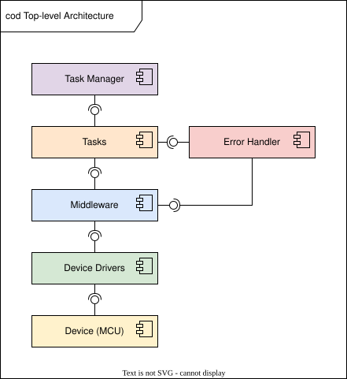
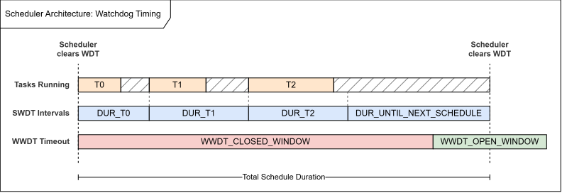
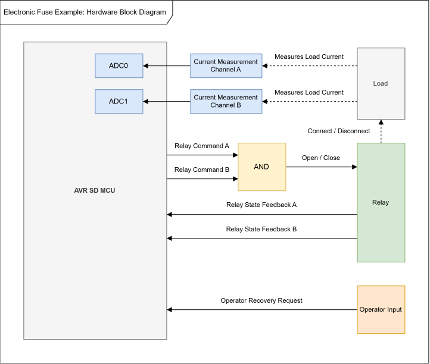
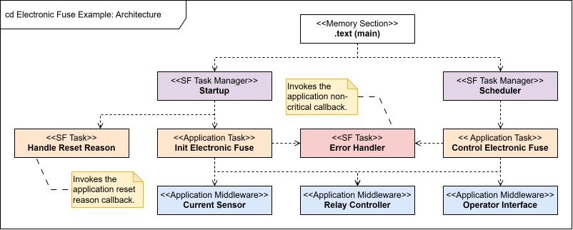
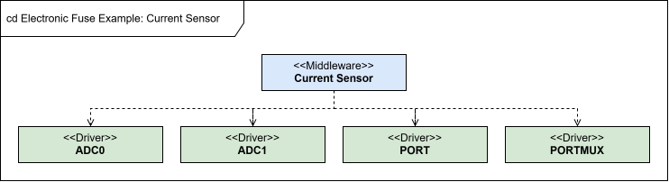
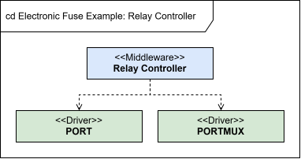

|
AVR SD Safety Framework 1.0.0
|
|
AVR SD Safety Framework 1.0.0
|
The AVR SD device combines safety mechanisms across the CPU, memories, clocks, power system, watchdog timers, interrupt system, and Error Controller. The Safety Framework uses a layered Task-based architecture to coordinate those mechanisms from the first instructions after reset through Startup, Mission Mode, error response, and optional Shutdown.
The framework provides a concrete implementation of a layered reference architecture. The architecture separates lifecycle control, safety and application decisions, hardware services, and register access. The same separation of responsibilities can be used when application-specific behavior is added to the framework.
The Software Safety Manual for the Safety Framework defines the detailed safety requirements, safety measures, Assumptions of Use, and System Integrator responsibilities associated with this architecture. It is included in the paid safety package and is the normative source for safety integration. Before using the framework in a safety application, review the manual and ensure that the applicable Assumptions of Use are addressed in the application design, configuration, and verification.
The architecture is designed to address the following safety integration goals:

The architecture has four software layers above the AVR SD hardware. Abstraction increases as the layers move away from the registers. Public API calls flow downward. Calls to public APIs within the same layer or in a higher layer are not permitted. Calls to the Error Handler are the defined exception within the Task Layer.
The Task and schedule interfaces provide a defined boundary between the framework and application code. Application Tasks can be developed in a separate code base and added to the Startup and Mission Mode schedules without modifying the verified framework source.
The Task Manager, Task, Middleware, and Driver layer pages linked below combine API documentation for the supplied implementation with architecture diagrams for each layer. Component diagrams show the components within a layer and their interfaces with other layers. Where applicable, class diagrams show static relationships and call dependencies among Task Managers, Tasks, Middleware, and Drivers. Activity and state-machine diagrams show runtime behavior for diagnostics, scheduling, error handling, interrupts, and Shutdown. Together, these diagrams show which components own each responsibility, how control flows through the framework, and how components interact across layer boundaries.
The Task Manager Layer controls the operational flow of the program. Task Managers issue the correct Tasks at the correct time and in the correct order. They own lifecycle sequence, schedule progression, and watchdog protocol while leaving application and safety decisions to the Tasks they call.
The framework provides Pre-startup, Startup, Scheduler, Interrupts, and Shutdown Task Managers. Pre-startup is intended to be called from .init3, while Startup and Scheduler are intended to be called from main. The Interrupts Task Manager provides entry points for the supported safety and error interrupt sources. Additional interrupt sources can use application-specific Task Manager entry points and handler Tasks. Shutdown is optional and is intended to be called after a completed Scheduler call when the application requests deeper sleep. The System Integrator provides the application schedules and the Tasks referenced by them.
See Main Example for an example of calling the Task Managers from main, defining application schedules, and connecting the required interrupt handlers.
The Task Layer contains the high-level actions and decisions of the safety system. Tasks initialize the system, run diagnostics, interpret service results, report Error IDs, process reset information, and perform the application behavior placed in each schedule. The implementation groups framework Tasks by lifecycle phase and includes Pre-startup, Startup, Scheduler, Interrupt, Shared, and Shutdown Tasks together with the Error Handler.
Tasks contain the context needed to determine what the system shall do and what an error means. The operation being performed and the result returned by Middleware allow the Task to select the applicable Error ID. The Error Handler is part of the Task Layer and is the defined exception that can be called by other Tasks in the same layer.
Task Managers call every scheduled Task through the same interface, without input parameters or a returned error status. This keeps the schedule independent of Task-specific data and error handling, and avoids the type and conversion hazards associated with generic void pointer parameters. Framework Task behavior is configured at compile time through macros in Tasks Config. Tasks report Error IDs directly to the Error Handler rather than returning errors to the Task Manager. By contrast, Middleware functions provide services to Tasks and can accept typed inputs and return data or status. This preserves the separation of responsibilities: Task Managers control when Tasks run, Tasks determine what action is required, and Middleware implements how the requested service is performed.
Application Tasks and Error IDs can extend this layer through the Startup and Mission Mode schedules while continuing to use the framework Task Managers, Middleware, configuration, and Error Handler.
The Middleware Layer provides services used by Tasks. A Middleware function accepts any inputs required for the service, validates them where possible, calls the required Driver operations in the correct sequence, and returns data or status to the calling Task.
Middleware responsibility follows the service being provided rather than the boundaries of a single hardware module. A Middleware component may therefore use several Drivers. For example, the Memory Manager uses CPU register access when configuring the stack pointer limit, while a diagnostic may coordinate the Error Controller with the hardware mechanism under test. Middleware is responsible for validating and sequencing these combined operations.
The Middleware implementation is organized around the device safety resources used by the framework. It includes Checksum, Clock, CPU, Error, Interrupt, Memory, Power, Reset, and Watchdog Managers. The Error Manager provides services for the hardware Error Controller and is separate from the Task-layer Error Handler, which applies the configured response to Error IDs. Depending on the resource, these components provide configuration, control, status, validation, and diagnostic services to framework Tasks.
Application Middleware can group the hardware operations required for an application feature behind a service used by its Tasks, without exposing the peripheral selection or internal processing used to implement that service. This keeps Task interfaces focused on application functionality and allows the Middleware implementation to change without affecting the Tasks that use it.
The Driver Layer isolates direct Special Function Register (SFR) access from Middleware. Driver functions can be replaced with stubs or mocks, allowing Middleware to be unit tested without requiring target hardware. Each Driver accesses only the registers belonging to its corresponding hardware module.
The implementation uses five common register-access patterns: read, write, set, clear, and modify. Read operations return register values, Write operations accept complete register values, and Set, Clear, and Modify operations use bit masks. These operations remove register-access syntax and bit manipulation from Middleware, allowing the Middleware source code to describe the hardware service being performed. The CCP Utility similarly hides the Configuration Change Protection unlock sequence required before writing protected registers.
Middleware remains responsible for validating the service inputs, sequencing the required hardware operations, and checking the resulting hardware state. Repeating this validation in the Driver Layer would duplicate the checks already required by Middleware and introduce Driver errors that Middleware would only pass back to the calling Task. Drivers therefore perform the requested register operation without taking ownership of service-level validation or error handling.
The implementation includes Drivers for the clock, CPU, memory, reset, power, interrupt, Error Controller, CRC, and watchdog resources used by framework Middleware. These Drivers provide the register operations required by the framework rather than a complete hardware abstraction for every peripheral feature. Application Drivers can add register operations required by application Middleware while preserving the same separation of responsibilities.
The framework execution flow is divided into five phases, each managed by the corresponding Task Manager.


Safe State and Mission Mode form the two principal operating states, each containing nominal and error substates. The state model shows the normal progression through Pre-startup and Startup into Mission Mode, the optional transition into Shutdown, and the paths back to Safe State and reset following a critical error. State transitions can be initiated by framework software or directly by hardware safety mechanisms. In particular, the Error Controller can force the device into Safe State and reset it without depending on software execution.
In Safe State, all I/O pins are floated and the surrounding circuitry is responsible for maintaining the application safety goal. When STRICT_SAFE_STATE is enabled, force-float remains active throughout Startup and the framework performs a controlled Safe State exit after the application Startup schedule has completed. When STRICT_SAFE_STATE is disabled, configured outputs can become active as the application Startup schedule initializes them, resulting in a gradual transition from Safe State into Mission Mode during Startup.
The framework uses the SWDT and WDT together to supervise execution without requiring an additional timer for Task scheduling. The SWDT enforces each Task interval, while the WDT supervises the timing of the complete schedule.
Each schedule entry pairs a Task with a duration in system clock cycles. Before running a Task, the Task Manager starts an SWDT interval using the assigned duration. If the Task returns early, the Task Manager waits for the interval to end before advancing the schedule. If the Task exceeds its duration, the SWDT expires and reports the error through an interrupt before the WDT timeout. The SWDT also supervises the interval before the next schedule execution.
The Scheduler clears the WDT each time it is called. The time between WDT clears is the sum of the configured Task durations and the interval before the next Scheduler call. The System Integrator configures this total duration to be longer than the WWDT closed window and shorter than the WDT timeout, so that each Scheduler call clears the WDT inside the open window, as shown below. A relatively long closed window and short open window are recommended so that an early or late Scheduler call is detected. Calling the Scheduler during the closed window causes a premature WDT clear and device reset, while failing to call it before the timeout causes WDT expiry and device reset.

The System Integrator is responsible for configuring the total duration and WDT timeout within the application FDTI. The timing analysis must include worst-case Task execution, interrupt overhead, non-resetting error handling, and WDT clock tolerance. See T_HandleSyncWatchdog and T_HandleWatchdog for implementation details. The watchdog windows are configured through WWDT_CLOSED_WINDOW and WWDT_OPEN_WINDOW, with additional guidance in Tips and Tricks.
Error handling is centralized in the Error Handler for both framework and application errors. Framework Tasks report the Error IDs defined by the Safety Framework, while application Tasks can report application-specific Error IDs through the same interface. Each Error ID is assigned a criticality that selects the software response. The Error ID list is intended to be extended with application-specific errors so they use the same criticality and callback model.
Tasks pass the returned error flag and associated Error ID directly to the Error Handler. The Error Handler checks the flag, ignores NO_ERROR results, and applies the configured response only when the flag indicates an error. This keeps error reporting consistent and avoids requiring every Task to conditionally call the Error Handler solely for reporting.
The activity diagram shows this software reporting path and the response selected by the configured criticality.

An Error ID can represent a failure detected by a framework or application check, a hardware status flag, or a diagnostic result. During Startup, the configured criticality of each Error ID associated with an Error Controller channel is translated into the corresponding channel severity and I/O float configuration. This aligns the hardware response of the Error Controller with the software response configured for the Error ID.
The interrupt for each hardware error source remains enabled regardless of its configured criticality. With CRITICAL channel severity, the Error Controller provides the direct Safe State and reset response, while the source interrupt provides a software backup response if the hardware response does not complete. With NON_CRITICAL channel severity, the source interrupt and Error Controller channel interrupt provide redundant software reporting paths. While the channel remains set, the Error Controller remains in ALARM and rejects reconfiguration and diagnostic execution. If the channel is not cleared before the configured timeout, the Error Controller resets the device. NOTIFICATION channels do not generate an Error Controller interrupt and are processed when the optional T_HandleNotificationErrors Task is included in a schedule.
This design provides one configurable error-response model for framework, application, and hardware errors while retaining direct hardware protection and redundant software handling for hardware faults.
Every device reset, regardless of its source, returns execution to Pre-startup, where the framework immediately verifies or establishes Safe State. This provides a common controlled restart path for normal resets, application-initiated resets, reset-causing diagnostics, critical error responses, and Shutdown exit.
The Pre-startup reset diagnostics execute as a sequence across multiple device resets. Before the first diagnostic reset, the framework stores the original reset reason. Protected General Purpose Register (GPR) data retains the original reset reason, diagnostic progress, and diagnostic results across the subsequent resets. After each reset, Pre-startup determines whether the reset was expected and continues the sequence from the retained state. If the retained state is corrupt or inconsistent, the framework aborts the sequence and records the failure instead of initiating another diagnostic reset. This prevents infinite reset loops and prevents the diagnostic resets from replacing the reset reason that started the sequence.
The state diagram shows how the reset-diagnostic sequence advances across resets, completes normally, or aborts if the retained state is unreliable.

After normal C initialization, Startup reports any errors retained during Pre-startup. Including T_HandleResetReason in the application Startup schedule is strongly recommended. It validates the retained reset information and invokes the configured reset reason callback with the original reset cause. When the Error Handler requests a software reset for a critical Error ID, that Error ID is retained and provided to the callback after reset. This allows the application to continue handling the critical error according to its safety requirements after the framework has completed the immediate Safe State and reset response. Shutdown also exits through a software reset but stores ERRID_NONE, allowing the application to distinguish an intentional Shutdown reset from a reset caused by a reported critical error and select the required recovery response.
The framework provides defined extension points for application Tasks, schedules, Middleware, Drivers, Interrupt Task Managers, Error IDs, and callbacks.
Application-specific implementation can be kept in application-owned source and header files and compiled together with the framework, keeping application behavior separate from the verified framework source.
The layered architecture is designed to support top-down development. Application behavior can first be defined as Tasks containing the decisions and safety actions required by the application. The services needed by those Tasks can then be defined as feature-oriented Middleware, followed by the Drivers required for the register access used to implement those services. This keeps application behavior independent of register-level implementation details and allows higher layers to be developed and tested with lower-layer dependencies replaced by mocks or stubs.
A typical application integration consists of:
Additional optional interfaces and configuration choices are described in Optional APIs and Config.
Application code can use the supplied Middleware and Driver APIs where they provide the required services. These APIs focus on the safety-related behavior required by the framework and do not expose every capability of the underlying hardware. Application-owned components can be added in separate files where the application requires additional behavior, services, or register access. For example, external clock configuration that is not provided by the framework can be implemented through an application-owned clock service and any additional Driver operations required by that service.
Keeping application functionality separate supports reuse of the framework verification evidence. If framework source is modified or replaced, the System Integrator is responsible for assessing every affected safety measure and re-establishing the corresponding verification evidence.
Before implementing an application extension, review and follow the Software Safety Manual for the Safety Framework and the API documentation for every framework interface used. The Software Safety Manual defines the applicable safety measures, configuration limits, Assumptions of Use, timing responsibilities, and verification obligations. The API documentation defines the supported usage, preconditions, side effects, and warnings for each interface. The integrated application must address all applicable requirements and documented warnings.
The following simplified electronic-fuse application shows how application requirements can be mapped onto the framework architecture. It illustrates the intended integration approach and is not a complete reference application.
An electronic fuse monitors the current supplied to a load and controls a relay that connects or disconnects the load. Two independent current-measurement channels, redundant relay-control outputs and relay-state readback allow the electronic fuse to detect measurement and control faults in addition to normal overcurrent events.

For this application, Safe State means that the relay is de-energized and open. The external relay circuit is designed so that floating the MCU outputs also de-energizes the relay, aligning the application Safe State with the framework MCU Safe State.
The example is based on five application requirements:
The example uses two scheduled application Tasks. The Startup path implements [EFUSE-001] and prepares the application state required by [EFUSE-005]. In the application Startup schedule, TM_Startup calls T_HandleResetReason before calling the Electronic Fuse initialization Task. The reset reason callback selects the Normal, Recovery or Fault Lockout state from the retained reset information. The initialization Task then initializes the Current Sensor, Relay Controller and Operator Interface Middleware while keeping the relay de-energized.
The Electronic Fuse control Task implements [EFUSE-002], [EFUSE-003] and [EFUSE-004]. It runs once per Mission Mode schedule. The Task combines the trusted current value, current operating state and any operator request to determine the required relay state. It then requests that state from the Relay Controller.

The example uses a 10 ms application FTTI. The WWDT uses WDT_TIMEOUT_CLK256 for a closed window of ~8 ms and WDT_TIMEOUT_CLK64 for an open window of ~2 ms. The durations of the Tasks in the Mission Mode schedule and the interval until the next schedule add up to a total of ~9 ms, placing each Scheduler call inside the WWDT open window. The periodic control Task therefore executes within the FTTI, while loss of schedule progression causes a reset within the same interval. The values are nominal and illustrate the principle, and an application timing budget must also include the tolerances described in Watchdog-Supervised Scheduling.
The Current Sensor configures ADC0 and ADC1. When the control Task requests a current value, it samples both channels and converts the results to milliamperes. It verifies that the measurements agree within the configured tolerance and applies any required filtering before returning a trusted current value. If the measurements disagree, it returns an error.

When the Current Sensor returns an error, the control Task reports ERRID_CURRENT_SENSOR. This Error ID is configured as NON_CRITICAL, causing the application callback to run immediately. The callback requests that the Relay Controller de-energize the relay and then initiates the framework Safe State and reset response.
On each invocation, the control Task requests that the Relay Controller apply the required relay state. The Relay Controller commands the redundant outputs and verifies that the output and readback states match the requested state. If they do not match, it returns an error to the Task. Because the application can no longer confirm or control the relay state, the Task reports ERRID_RELAY_CONTROL, which is configured as CRITICAL and causes immediate entry into Safe State followed by a device reset.

A valid overcurrent measurement is an application operating condition rather than a failure of the current-sensing or relay-control functions. The control Task responds by requesting that the Relay Controller de-energize the relay and enters the Tripped state.
Application Drivers provide the ADC0, ADC1, PORT and PORTMUX register operations required by the application Middleware. The Current Sensor uses ADC0, ADC1, PORT and PORTMUX Driver operations to configure and sample the complete current-sensing path. The Relay Controller and Operator Interface use PORT and PORTMUX Driver operations for relay command, relay readback and operator input. The Middleware components define how these register operations are combined into application services, while the Drivers remain limited to register access.
After a fault-induced reset, the retained reset reason and Error ID are provided to the reset reason callback. ERRID_CURRENT_SENSOR selects Recovery because the relay-control function remains available and the current-sensing function can be checked again after reset. ERRID_RELAY_CONTROL selects Fault Lockout because the application can no longer confirm or control the relay state. Unexpected reset information also selects Fault Lockout because the application cannot initially confirm that normal operation is safe. The relay remains de-energized in both Recovery and Fault Lockout. Recovery returns to Normal operation only after an operator request and successful completion of the configured recovery checks.
Together, the initialization and control Tasks cover normal operation, fault response and post-reset recovery. By adding only these two scheduled application Tasks and the required application Middleware, Drivers, Error IDs and callbacks, the simplified electronic fuse is integrated into the complete framework-managed safety lifecycle. The framework supplies fixed schedule timing, watchdog supervision, centralized error handling, Safe State and reset recovery, while the application behavior remains separate from the verified framework source.